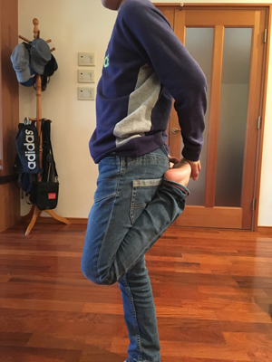
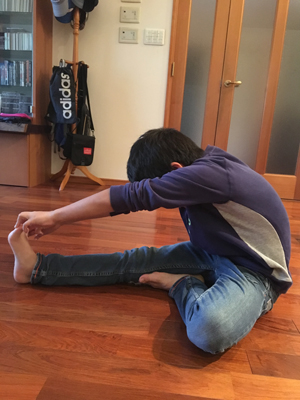

《サッカー少年に多いケガ・病気》についての覚え書き 2
「オスグッド病」
オスグッド病と呼ばれるひざのスポーツ障害で、
正式には「オスグッドシュラッター病」と言います。
スポーツの動きの中で繰り返される大腿四頭筋(ももの前側の筋肉)の強い収縮が
子どもの発達途中の柔らかい骨を強く引っぱり、骨が剥離したり前へ飛び出したりして
炎症を起こす病気です。
10才から15才くらいの成長期に多く発症します。
《原因について》
オスグッド病の原因についてあげられるのは主に次の3点です。
1、柔軟性のない筋肉
2、足首・股関節の堅さと悪い姿勢
3、ハードワークによる負担
1、柔軟性のない筋肉と関節
成長途中の子どもの骨は、成長軟骨という柔らかい骨でできており、
強く引っぱられ続けるなど負担がかかりすぎると炎症を起こします。
オスグッド病の場合、大腿四頭筋(ももの前側の筋肉)に、ジャンプや
強い踏み込み動作を繰り返すことで強い力が入り、ひざにつながる
成長軟骨を強く引っぱります。
シーバー病と同様に骨の成長に追いつかない筋肉が柔軟性に欠くことから、
より成長軟骨に負担をかけることになります。
また、ジャンプ動作の沈み込み、キックの踏み込み姿勢に問題があると、
ハムストリングス(ももの裏側の筋肉)が堅く伸びにくくなり、
これもオスグッドの原因の一つとなります。
2、足首・股関節の硬さと悪い姿勢
身体のすべての関節は連動して関係しています。
そのため、障害が起こっているヵ所とは直接関係しないように思える場所の
ゆがみや不具合が原因で思わぬ場所に痛みが出たりします。
オスグッド病はひざのスポーツ障害ですが、足首や股関節の可動域に柔軟性がないと
ひざへの負担が大きくなり、そのため発症のリスクは高くなります。
3、ハードワークによる負担
成長期の筋肉の柔軟性が欠けることは、
多少の個人差はありますが万人に共通する事象です。
この点を理解した上でのリスク管理として、筋肉を適度に休ませて、
成長軟骨にかかる負担を減らすことも重要です。
サッカーをしている子どものスポーツ障害は軸足に発症することが
圧倒的に多数です。(8割強とも)ボールを蹴るために力を使うため、
利き足(蹴る方の足)に発症しやすいように思われがちですが、
強いボールを蹴るためには身体を支える軸足(踏ん張る方の足)の大腿四頭筋に
より強い力が必要となり、そのため軸足のひざの成長軟骨により大きな負担となります。
筋肉の柔軟性を維持するための自己管理を怠った状態で、
ハードワークを繰り返すことで子どものスポーツ障害は発症します。
これはオスグッドに限らずシーバーでも同じことが言えます。
《予防について》
柔軟な筋肉を維持するためにはまず何よりもストレッチが有効です。
オスグッド病で整形外科を受診すると必ずストレッチをするように言われます。
筋肉の柔軟性を高めるために、温めることも効果があります。
わざわざ温めるまではしなくても、気をつけて冷やさないようにするだけで違います。
正しい姿勢を保ち、正しい体の使い方をするためには体幹の筋肉も重要です。
体幹のインナーマッスルを鍛えるトレーニングをすることも有効です。
サポーターの使用も有効です。
※サポーターについては「負担を軽減する」役割であるという認識を持つことが
必要かと思います。まちがっても「サポーターを着用している」＝「痛くても運動して大丈夫」
ではないこと、また、サポーターを着用することがオスグッドの治療になることは
絶対にないということは忘れないようにしていただきたいと思います。
オスグッドシュラッターバンドは、大腿四頭筋が骨とつながるヵ所を圧迫し、
腱を緩ませることで成長軟骨にかかる負担を減らす、という役割をします。
《痛みが出ているときの注意》
オスグッドに限らず、ケガなどで痛みがある場合はまず冷やすことが大切です。
「痛みが出ている」＝「炎症が起きている」と考えられるためで、特に関節のケガで
腫れを伴う場合はとにかくできるだけ早く冷やすことをおすすめします。
痛みが出ている間は継続して冷やすことが望ましく、シップを貼ることも有効です。
腫れを伴っている場合放置すればするほど状況は悪化し、治るまでの時間も長くなります。
筋肉は温めることで伸びやすくなりますが、すでに炎症を起こして痛みがあるひざの部分は、
温めることでより炎症の状態を加速する可能性があります。
ストレッチについては、痛みが出ている状態で行ってもあまり効果はありません。
「ストレッチの紹介」
《大腿四頭筋のストレッチ》
1. 両足に均等に体重が乗るように立ちます。
2. できるだけそのままの姿勢を保ちながら、ひざを曲げて同じ方の手で足の甲をつかみます。


3. 胸をそらせるようにして、足の甲を引き上げます。
※ 片足で立つとぐらぐらする場合は、壁などにつかまって行ってください。
正しい姿勢を保った状態で行わなければ効果はありません。
4. もう片方の足も、同じようにして1～3を繰り返します。
※ ひざに痛みがある状態で大腿四頭筋を無理に伸ばそうとすると
逆に症状が悪化することがあります。
《ハムストリングスのストレッチ》
1. 足を開き、片膝を曲げて座ります。
2. 伸ばしている方の足のつま先はまっすぐ上を向けて、そのつま先をつかみます。


※ この時、足を伸ばしたままでつま先がつかめない場合はひざを少し曲げてもOK。
3. おへそを太ももに近づけるようなイメージでまっすぐ前に倒れます。
4. もう片方の足も、同じようにして1～3を繰り返します。
《関節のリリースと姿勢の矯正》
シーバーで紹介したテニスボールを踏むストレッチは、
足首、ひざ、股関節の各関節を正しい位置に矯正する効果もあります。
足裏のアーチは地味な器官ですが、身体全体のバランスに関わる
重要な部位だったりします。テニスボールを踏むストレッチは、
正しく実施できるのがより効果的ではありますが、
適当に踏んでいてもそれなりに効果が期待できるので、
子ども自身にまかせてやらせるには適切なストレッチです(笑)。
また、オスグッドになりやすい子の特徴に
「骨盤が後掲になっている」というものがあるそうです。
これは、骨盤が後掲姿勢になることで、大腿四頭筋(ももの前側の筋肉)が緊張し
堅くなる傾向にあるためで、筋肉の柔軟性を確保するためには骨盤を立てて、
正しい姿勢を意識づけることも大切です。